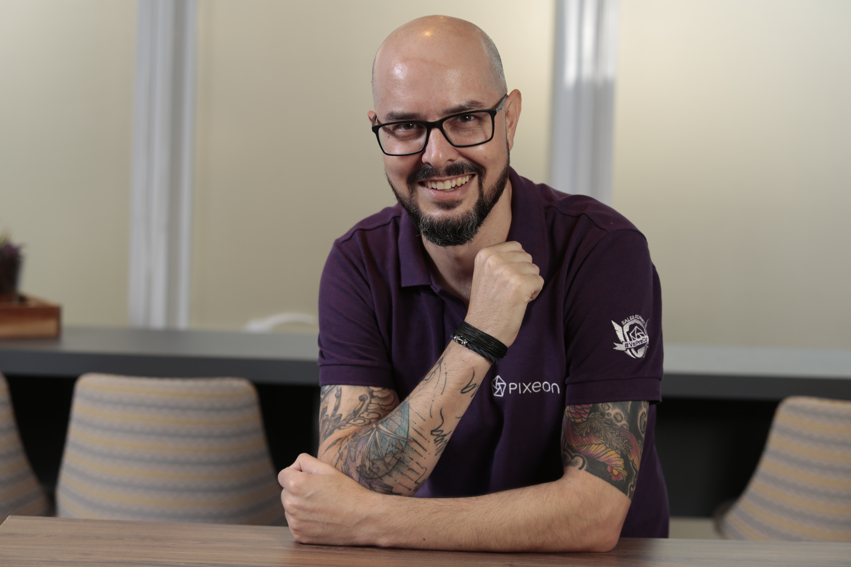

Casado duplamente com a Julhiana Pinheiro e pai de 04 pessoas incríveis: Eduarda, Gustavo e os gêmeos do 2º tempo de casamento, Joaquim e Benicio.
Também professor de violão nas horas vagas e baterista frustrado. Curiosidades: Já fiz abertura de show para Barão Vermelho quando mais jovem e estou aprendendo LIBRAS
(língua Brasileira de sinais) com minha filha Eduarda, que é entusiasta no assunto. Já morei no México, pela Edered Ticket Car, em Florianópolis, e atualmente em São Caetano do Sul/SP.
Resumo Profissional
Executivo de Produto com sólida experiência em estratégia e gestão de produtos tecnológicos voltados ao mercado corporativo. Com atuação “customer centric”, perfil orientado para resultados, gestão de times multidisciplinares com foco na redução de custos e aumento da eficiência, implementei análises e ações que impactaram o 'lost rate' e o valor percebido pelo cliente. Minha experiência inclui colaborações com stakeholders globais e negociações estratégicas em alianças OEM e parcerias. Além disso, sou ativo em mentoria para jovens profissionais de Produtos e Startups, incluindo atuação na ACATE (Associação Catarinense de Tecnologia), onde contribuo para o desenvolvimento e capacitação de novos talentos.
Habilidades e Competências
- Gestão Estratégica de Produtos: Planejamento e desenvolvimento de produtos alinhados com objetivos organizacionais e necessidades do mercado, com experiência em otimização de soluções escaláveis.
- Desenvolvimento e análise de P&L do portfólio: Em apoio e colaboração com equipes de finanças e tecnologia, com foco na compreensão dos resultados por oferta, classificação no ciclo de vida e desenvolvimento de ações-chave, sempre com foco no Cliente, na redução de custos e aumento de rentabilidade.
- Mentoria para Jovens Profissionais e Startups: Atuação como mentor na ACATE e em outros programas, contribuindo com insights e desenvolvimento de habilidades para jovens talentos no mercado de Produtos e Startups.
- Alianças e Parcerias Estratégicas (OEM): Capacidade de identificar e negociar com parceiros de white-label, com ênfase em manter estruturas de revenue sharing competitivas e vantajosas para a empresa.
- Apoio Multidisciplinar a Equipes de Vendas e Suporte: Experiência na interface com equipes de Pré-vendas, Professional Services, Customer Success e Suporte Técnico para garantir a entrega de valor e suporte completo ao cliente.
- Gestão de Programas de Reconhecimento e Motivação de Equipes: Implementação de práticas trimestrais para reconhecimento de desempenho alinhadas aos objetivos empresariais, promovendo motivação e alinhamento com metas estratégicas. Prática de 1 to 1 semanal com cada liderado direto, buscando alinhamento constante entre o esperado e o desenvolvimento individual, incluindo carreira.
Principais Realizações Recentes
- Redução de Lost Rate em 10% para Thomson Reuters e Pixeon: Em iniciativas conjuntas, conduzi análises detalhadas e ações focadas na proposição de valor e ajustes nas soluções, gerando uma redução de 10% no 'lost rate'. O foco esteve em desenvolver estratégias que aumentassem o valor percebido pelos clientes, fortalecendo a retenção e melhorando a experiência do cliente.
- Transição de Clientes para Soluções em Nuvem no DFe SaaS: Liderei a migração de clientes de soluções locais para a versão em nuvem de Documentos Fiscais Eletrônicos, em uma operação estratégica para o core business de emissão fiscal. Esse movimento aumentou a eficiência operacional e facilitou a escalabilidade da solução para atender a grandes volumes, além de alinhar o produto com tendências de mercado.
- Experiência em HealthTech e Combustíveis: Na HealthTech, trabalhei por quase três anos com EMRP, onde desenvolvi habilidades analíticas voltadas para o setor de saúde. Na área de combustíveis, minha experiência com Ticket Log e Ticket Car envolveu o controle e a análise de dados operacionais e financeiros, criando uma base sólida em eficiência operacional e gestão de ativos.